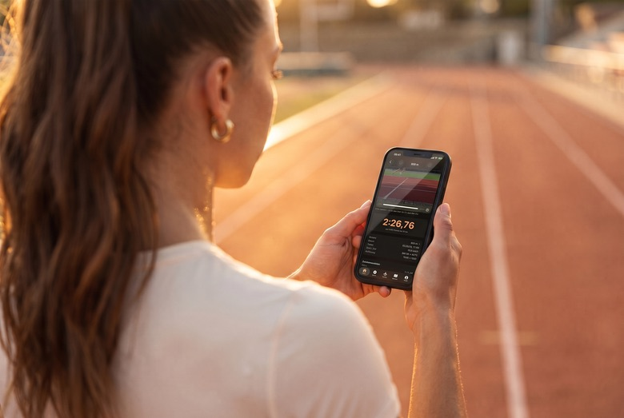

Zeitmessung / Video
Sprintzeit mit dem Handy messen: Wie genau ist das?
Ein Video macht deine Zeit nachprüfbar. Wie genau sie ist, entscheidet sich an Bildrate, Start und Zielmoment.

Kurzfassung
Bei konstanter Bildrate beträgt der Abstand zwischen zwei Videobildern 1/fps Sekunden: bei 30 fps rund 33 ms, bei 60 fps rund 17 ms. Dieser Bildabstand ist keine garantierte Messgenauigkeit. Für vergleichbare Sprintzeiten müssen auch Startverfahren, Zielkriterium und Aufbau gleich bleiben.
Eine Sprintzeit kann auf zwei Nachkommastellen stehen und trotzdem ungenau sein. Die Anzeige sagt zunächst nur, wie eine Zahl dargestellt wird. Für die Messung zählt, wann die Uhr beginnt, wann sie endet und welche Informationen dazwischen verfügbar sind. Ein Handyvideo hat dabei einen praktischen Vorteil: Du kannst die ausgewählten Momente später noch einmal ansehen.
Die Bildrate setzt das Zeitraster
Mehr Bilder pro Sekunde bedeuten kleinere zeitliche Abstände. Die Rechnung ist einfach: Bei einer konstanten Bildrate von f Bildern pro Sekunde beträgt der Abstand benachbarter Bilder Δt = 1/f Sekunden. Für Millisekunden multiplizierst du das Ergebnis mit 1000. Die Werte in der Tabelle sind gerundet. [Eigene Herleitung]
| Bildrate | Abstand |
|---|---|
| 30 fps | 33,33 ms |
| 60 fps | 16,67 ms |
| 120 fps | 8,33 ms |
| 240 fps | 4,17 ms |
„fps“ steht für Bilder pro Sekunde. Die Tabelle beschreibt das Zeitraster des Videos. Sie sagt nicht, dass jede Messung innerhalb dieses Abstands richtig liegt. Du musst weiterhin das passende Bild finden. Ist der Körper verwischt oder die Linie verdeckt, bleibt die Auswahl unsicher. Ein feineres Raster macht fehlende Bildinformationen nicht nachträglich sichtbar.
Bei variabler Bildrate sind die Abstände nicht zwingend gleich. Dann ist die tatsächliche Zeitinformation der Bilder entscheidend; eine durchschnittliche fps-Angabe reicht als allgemeine Rechenregel nicht aus. Provarun unterscheidet in seiner Auswertung zwischen erkannter und variabler Bildrate und weist bei niedriger Bildrate auf die gröbere Auswahl hin. [Provarun: Videoauswertung]
Bildabstand und Messfehler sind verschiedene Dinge
Ein kleiner Bildabstand beschreibt die zeitliche Auflösung, nicht die gesamte Genauigkeit. Wenn du das falsche Startbild auswählst, wird auch ein scharfes Zielbild die Messung nicht retten. Dasselbe gilt umgekehrt. Start und Ziel sind zwei Entscheidungen, die gemeinsam in die Zeit eingehen. Deshalb lässt sich aus „60 fps“ allein kein pauschales Genauigkeitsversprechen ableiten.
Auch eine Bild-für-Bild-Auswertung ist nicht automatisch eine offizielle Wettkampfmessung. Sie macht nachvollziehbar, welche Ereignisse du gewählt hast. Für dein Training kann genau das nützlich sein: Du erkennst eine fragliche Auswahl und kannst sie überprüfen. Ob ein konkretes System gegenüber einer Referenz korrekt misst, müsste dagegen in einer eigenen Validierung untersucht werden.
Handzeit lässt sich nicht zuverlässig umrechnen
Eine Handstoppuhr ist kein austauschbarer Ersatz für elektronische Zeitnahme. Hetzler und Kollegen verglichen beide Methoden bei einem 200-m-Lauf mit Zwischenzeiten in 25-m-Abständen. Die Handzeiten lagen teils vor und teils hinter den elektronischen Zeiten. Ein kleiner mittlerer Unterschied verdeckte größere Fehler einzelner Messungen. [Hetzler u. a., 2008]
Aus dieser Streuung ließ sich kein verlässlicher allgemeiner Korrekturfaktor ableiten. Für deinen Vergleich heißt das: Eine handgestoppte Schulzeit wird durch einen festen Zuschlag nicht zu einer gleichwertigen elektronischen Zeit. Bewahre die ursprüngliche Messmethode als Teil der Angabe auf. Die Studie prüfte Handstoppuhren, keine heutige Provarun-Version. [Hetzler u. a., 2008]
Der Start gehört zur Zeit
Eine Zeit ab Startsignal misst etwas anderes als eine Zeit ab erster Bewegung. Im ersten Fall liegt die Reaktion zwischen Signal und Loslaufen innerhalb der Messung. Im zweiten beginnt die Uhr erst mit der Bewegung. Auch ein Anlauf vor der Messstrecke verändert die Aufgabe. Ein fliegender Start und ein Start aus dem Stand brauchen deshalb unterschiedliche Einträge in deinem Trainingsprotokoll.
Haugen und Buchheit zeigen in ihrer Methodenübersicht, wie stark unterschiedliche Startverfahren und Auslöser Sprintzeiten verändern können. Solche Unterschiede können größer ausfallen als die Leistungsentwicklung über Jahre. Auch Wind und weitere äußere Bedingungen beeinflussen das Ergebnis. Eine neue Bestzeit ist erst verständlich, wenn der Aufbau dazu bekannt ist. [Haugen & Buchheit, 2016]
Ein guter Aufbau lässt sich wiederholen
Wähle einen Aufbau, den du beim nächsten Lauf erneut verwenden kannst. Stelle das iPhone stabil seitlich auf die verlängerte Ziellinie. Im Bild sollten Linie und vorbeilaufender Körper erkennbar sein. Prüfe den Ausschnitt vor dem Lauf. Ein schräger Blick oder eine verdeckte Linie macht die Entscheidung über den Zielmoment schwerer. [Provarun: Aufbau]
Lege vorab fest, welchen sichtbaren Moment du als Ziel nimmst, und bleibe dabei. Prüfe nach dem Lauf, ob du tatsächlich denselben Maßstab benutzt hast. Beim importierten Video brauchst du außerdem einen nachvollziehbaren Startmoment. Ein Clip, der erst nach dem Loslaufen beginnt, liefert keine vollständige Zeit für den Start aus dem Stand.
Notiere zur Zeit mindestens die Strecke, das Startverfahren und die Messmethode. Ergänze auffällige Änderungen wie Gegenwind, andere Schuhe oder einen anderen Untergrund. Du musst daraus kein Labor machen. Die Notiz soll dir später helfen, zwei Ergebnisse fair zu lesen. Warum diese Bedingungen wichtig sind, erklärt auch der Leitbeitrag zum Sprinten.
Nutze die Zeit als Verlauf
Mehrere vergleichbare Läufe sagen mehr als ein isolierter Ausreißer. Die Übersicht von Haugen und Buchheit empfiehlt, Messfehler und tatsächliche Leistungsänderung gemeinsam zu betrachten. Wiederholte Beobachtungen können die Beurteilung verbessern. Für dich bedeutet das: Speichere auch gewöhnliche Läufe und prüfe auffällige Sprünge zuerst im Video. [Haugen & Buchheit, 2016]
Wenn du deine Zahl anschließend einordnen möchtest, findest du im Beitrag über 100-m- und 400-m-Zeiten offizielle Vergleichspunkte und ihre Grenzen. Für die ersten Läufe nach einer Pause hilft die Orientierung zum Wiedereinstieg. Eine sauber dokumentierte heutige Zeit ist dafür ein besserer Ausgangspunkt als eine nachträglich geschönte Erinnerung.
Häufige Fragen
Sind 60 fps gleich 0,01 Sekunden Genauigkeit?
Nein. Bei konstanten 60 fps liegen rund 16,67 Millisekunden zwischen zwei Bildern. Die gesamte Messgenauigkeit hängt zusätzlich von Start- und Zielwahl sowie vom Aufbau ab.
Kann ich Handzeit in elektronische Zeit umrechnen?
Ein verlässlicher allgemeiner Korrekturfaktor ließ sich in der Untersuchung von Hetzler und Kollegen nicht ableiten. Vergleiche Zeiten derselben Messmethode.
Warum ist der Start so wichtig?
Eine Messung ab Signal schließt die Reaktion ein; eine Messung ab erster Bewegung beginnt später. Diese Startverfahren ergeben unterschiedliche Zeitintervalle.
Quellen
- Eigene Herleitung
Δt = 1/f Sekunden; 1000/f Millisekunden. Konstante Bildrate, auf zwei Nachkommastellen gerundet. - Hetzler, Stickley, Lundquist & Kimura (2008)
Reliability and accuracy of handheld stopwatches compared with electronic timing in measuring sprint performance.
Zur Quelle - Haugen & Buchheit (2016)
Sprint Running Performance Monitoring: Methodological and Practical Considerations.
Zur Quelle - Provarun, Version 1.1
Videoauswertung, Bildrate und Startverfahren.
Zur Quelle